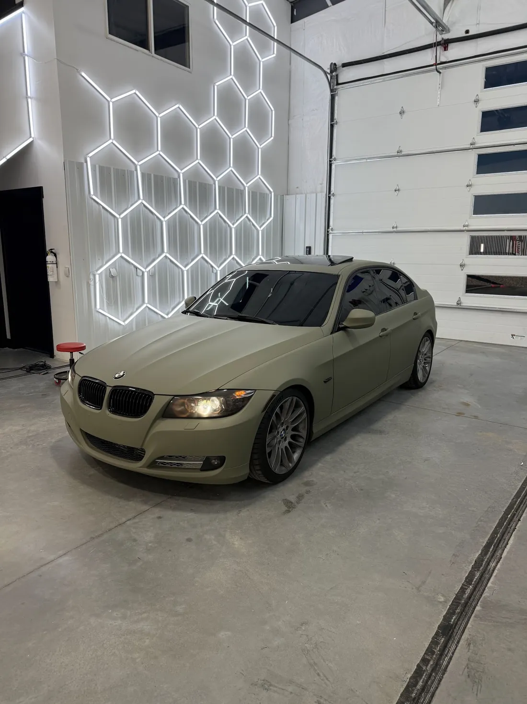
KO Tinting, window tint and paint protection film in Idaho Falls, ID
Window tint and PPF in Idaho Falls, done by the guy who owns the shop.
KO Tinting & PPF is Kyzer's shop on Boeing St. He tints cars, trucks, SUVs, side-by-sides and homes, and puts clear film on paint that's going to see a lot of gravel roads. Every job happens indoors, in a clean, bright bay, and he does the install himself.
-
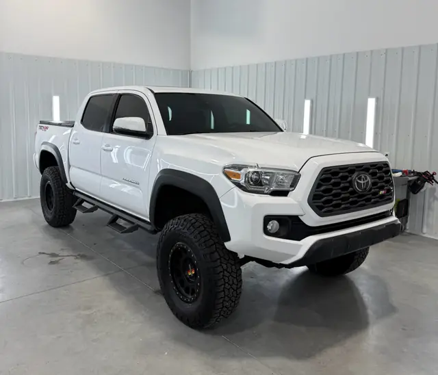
Car and truck tint from $150
Ceramic film for daily drivers, lifted trucks and the new rig you just drove off the lot. Less heat in summer, less glare off the snow in winter, and a clean look that matches the factory glass. Every piece is cut to your windows.
-
Paint protection film
A clear, self-healing layer over the hood, bumper, mirrors or the whole front end. It takes the rock chips from I-15 and the gravel from back roads so your paint doesn't. Priced by vehicle and how much you want covered.
-
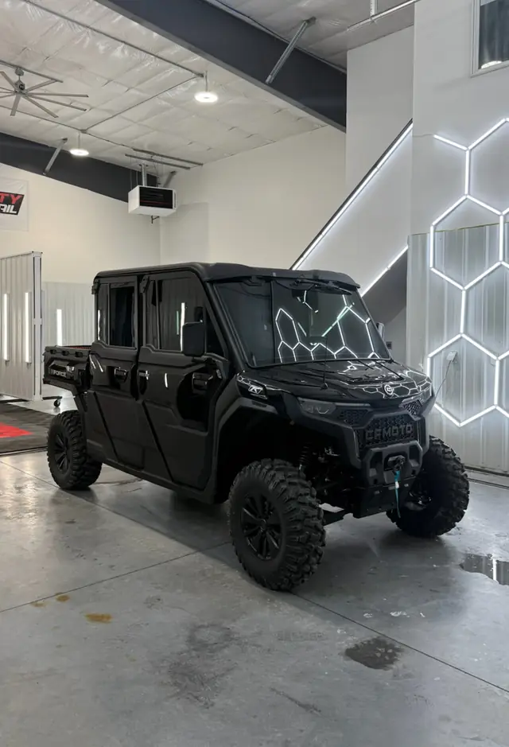
UTVs, side-by-sides and equipment
Cab glass on side-by-sides, work trucks and equipment gets the same film and the same care as a car. Keeps the sun off you on the trail and in the field.
-
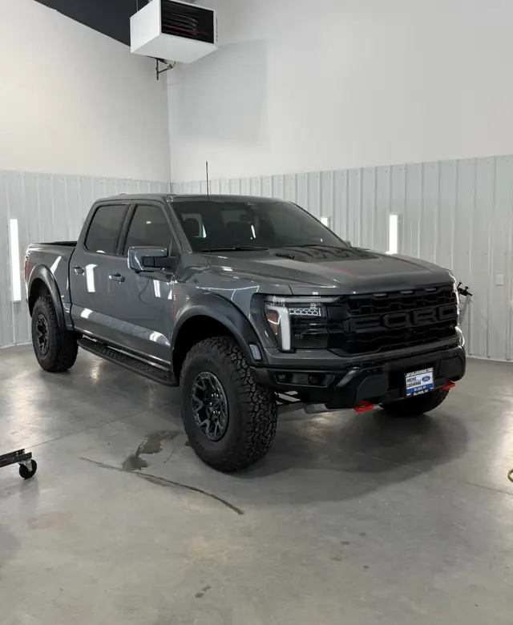
Windshield sun strips
A dark band across the top of the windshield for driving east in the morning and west on the way home. Kept to what Idaho allows.
-
Home and business windows from $200
Film for the west-facing rooms that bake every afternoon, for street-side windows you'd like a little more private, and for storefront glass. You keep the view and lose a lot of the heat and glare.
Pick your shade.
Tint is sold by how much light it lets through. Lower number, darker glass. Slide it and see what eastern Idaho looks like from the driver's seat.
Legal on every window in Idaho.
Fresh out of the bay.
- BMW 3 Series
- Cybertruck
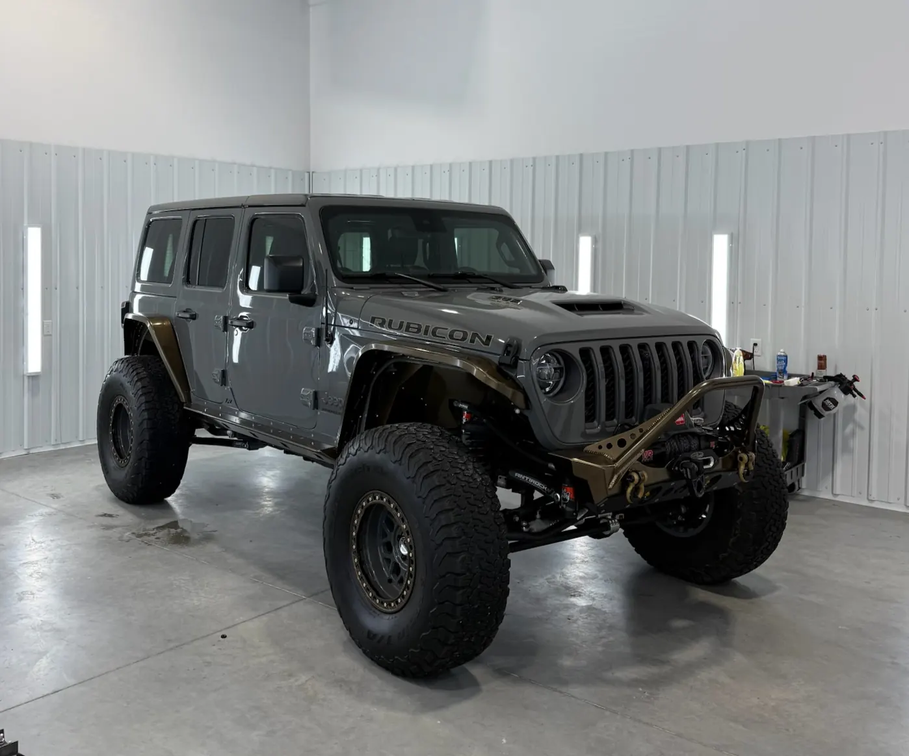
Wrangler Rubicon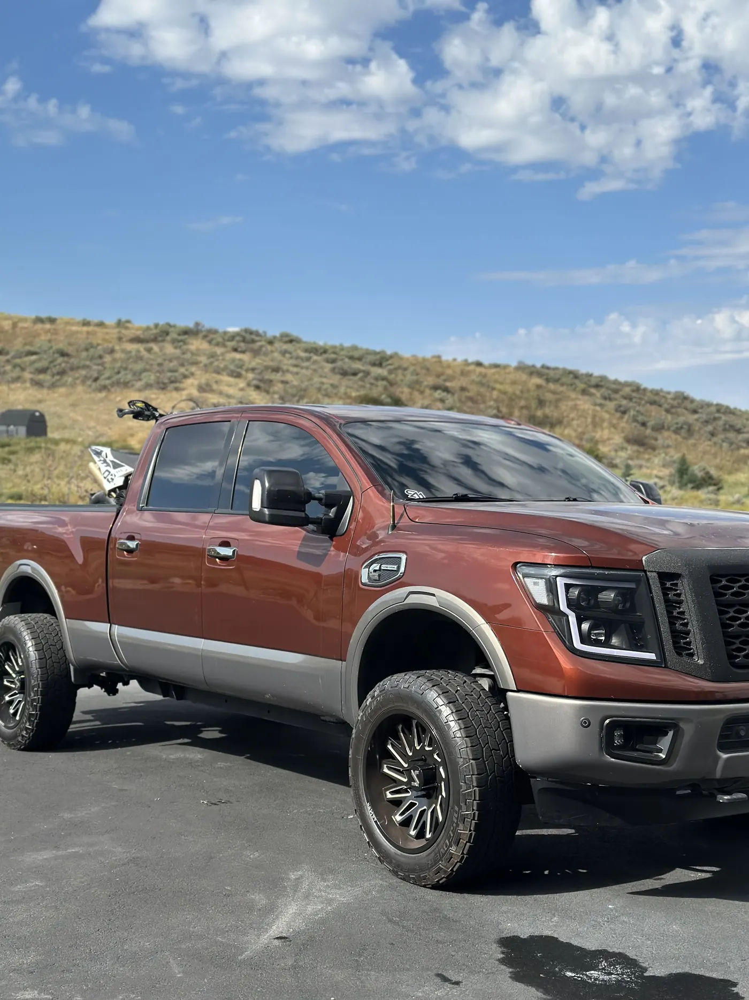
Titan XD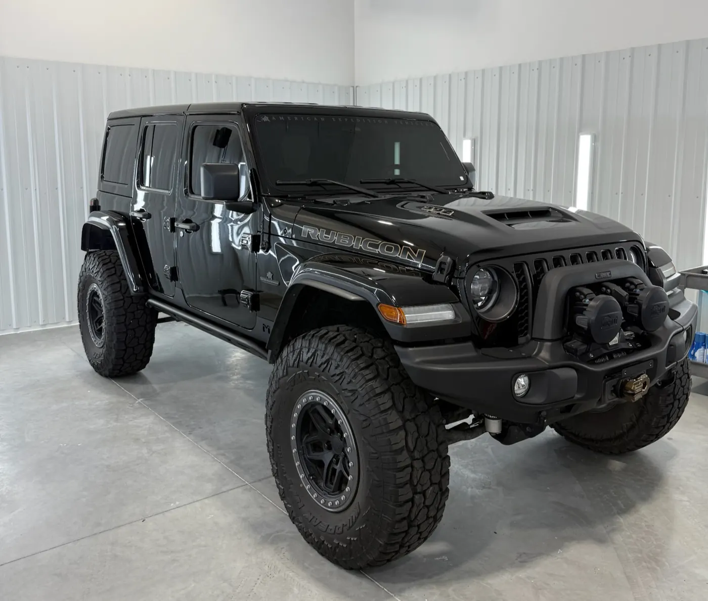
Blacked-out Wrangler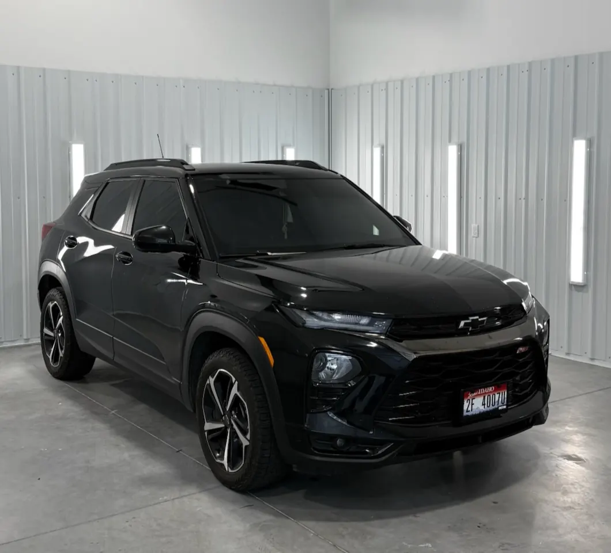
Trailblazer RS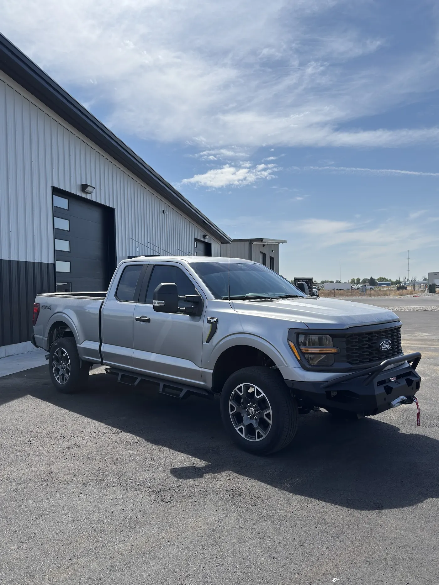
F-150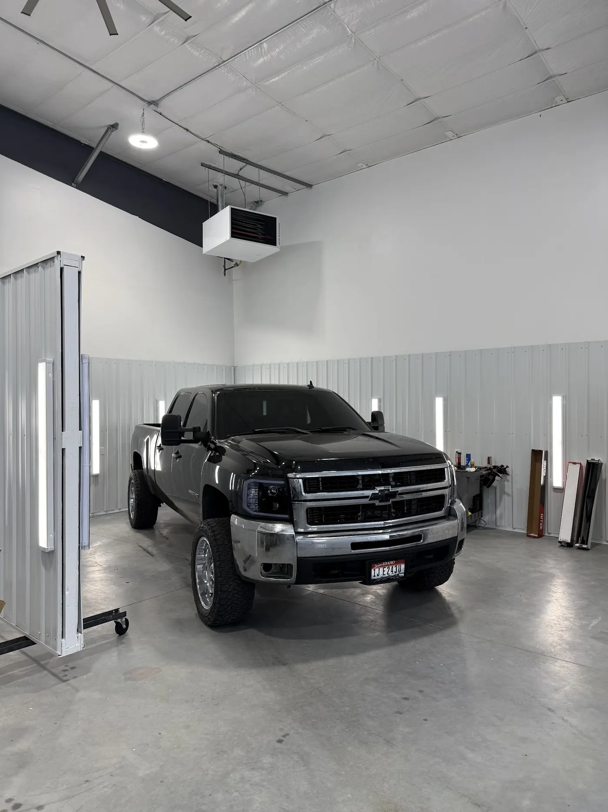
Silverado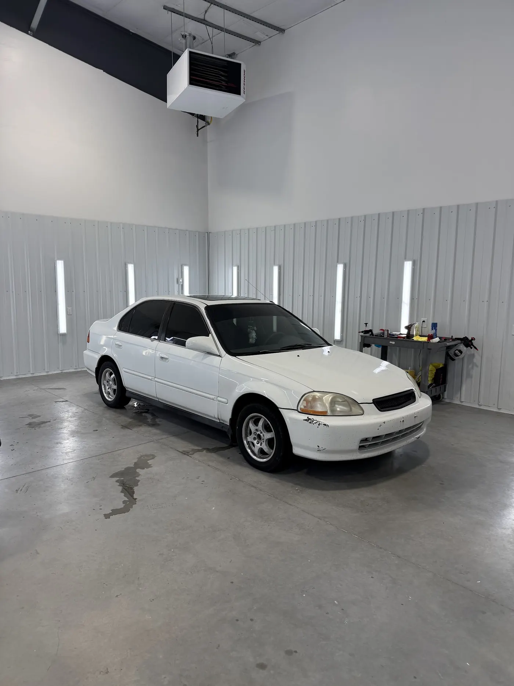
Civic
"Drove from Utah to get my windows tinted, Kyzer is the best and the car looks great!"
Kolter J., Google review
"I can tell he cares about you as a customer and your not just some number in a quickbooks. He only uses the best quality tint there is."
Ruger L., Google review
"Super easy to coordinate with, had great recommendations on which percents to do! Turned out amazing!"
Izzie C., Google review
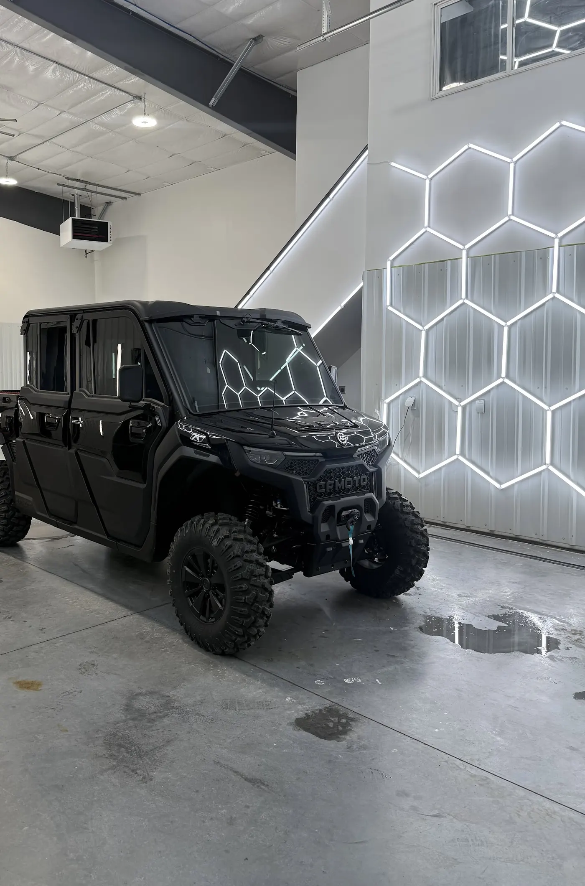
A clean shop makes clean tint.
Dust is what ruins a tint job. That's why every car comes inside to a sealed, well-lit bay with polished floors and bright light on every edge of the glass. Kyzer can see every speck before the film goes down.
The shop is at 2926 Boeing St, Unit D, in Idaho Falls. Work is by appointment, so call or text to get on the books.
- Idaho Falls
- Ammon
- Iona
- Ucon
- Rigby
- Shelley
- Blackfoot
- Rexburg
Questions people ask before they book.
How dark can I tint my windows in Idaho?
Idaho Code 49-944 says the front side windows and the rear window need to let in at least 35% of light, and the side windows behind the driver need at least 20%, each with a 3% tolerance. A non-reflective strip can go across the top of the windshield. If you want darker for a medical reason, ask about the exemption.
How much does it cost?
Vehicle tint starts at $150 and home window tint starts at $200. The final number depends on the vehicle, how many windows and which film. Paint protection film is priced by the vehicle and how much you want covered. A quick text with the year, make and model gets you a real number.
How long does a tint job take?
Most cars and trucks take about two hours. Leave the windows up for a few days afterward while the film cures, and don't worry about a little haze at first. It clears up on its own.
Is ceramic tint worth it?
For most people, yes. Ceramic rejects more heat than basic dyed film at the same shade, blocks UV and won't mess with your phone or GPS. It also takes the edge off the glare from snow in the winter.
Do you tint UTVs and equipment?
Yes. Side-by-side cab glass, work trucks and equipment all come through the shop.
Is the work guaranteed?
The film comes with the manufacturer's warranty. If something isn't right with the install, bring it back and Kyzer will make it right.
Get a free quote.
Call or text. You'll be talking to Kyzer, the guy who does the work.
(208) 716-7461- Hours
- By appointment
Call or text to book